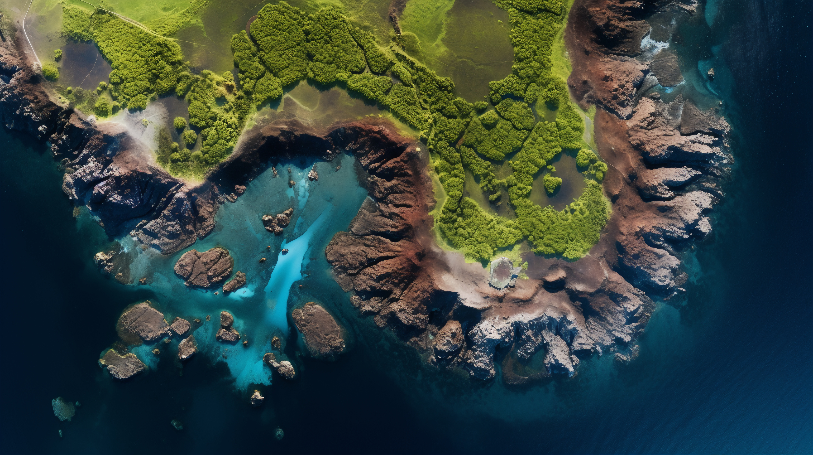

From vulnerability to leadership: How small island developing states are pioneering climate-health adaptation strategies - A systematic review
Keywords:
Small Island Developing States, climate change, health adaptation, public health leadership, systematic review, resilienceAbstract
Background: Climate change represents one of the most significant public health challenges of the 21st century, with Small Island Developing States (SIDS) experiencing disproportionate impacts. Traditional discourse has positioned SIDS as vulnerable victims; however, emerging evidence suggests that they are pioneering innovative climate-health adaptation strategies.
Methods: A systematic search of PubMed, Embase, Web of Science, and grey literature databases (2010-2024) following the PRISMA guidelines. Studies from officially recognized SIDS focusing on climate-health adaptation and leadership were included. Data were synthesized thematically to identify leadership models, governance approaches and measurable outcomes.
Results: Of 2,847 records, 67 studies from 34 SIDS met the inclusion criteria. Five leadership themes emerged: community-based governance (n=45), traditional knowledge integration (n=38), regional collaboration (n=31), adaptive health systems (n=29), and Indigenous innovation (n=22). SIDS demonstrated significant leadership by establishing regional climate-health surveillance networks, pioneering nature-based health interventions, and creating community-led early warning systems, achieving a 78% average hazard detection improvement.
Discussion: SIDS have evolved into climate-health adaptation leaders through innovative governance models that integrate traditional knowledge, community participation, and regional cooperation. Their leadership provides valuable lessons for global climate-health adaptation, demonstrating that small size and resource limitations can catalyze rather than constrain innovation.
References
1. Galaitsi SE, Linkov I, Cashman A, Joseph G, McConney P, Keenan J, et al. Balancing climate resilience and adaptation for Caribbean small island developing states (SIDS): building institutional capacity. Integr Environ Assess Manag. 2024;20(5):1237–55. doi:10.1002/ieam.4860.
2. Thomas A, Baptiste AK, Martyr-Koller R, Pringle P, Rhiney K. Climate change and small island developing states. Annu Rev Environ Resour. 2020;45(1):1–27. doi:10.1146/annurev-environ-012320-083355.
3. Kelman I, Ayeb-Karlsson S, Rose-Clarke K, Prost A, Ronneberg E, Wheeler N, et al. A review of mental health and wellbeing under climate change in small island developing states (SIDS). Environ Res Lett. 2021;16(3):033007. doi:10.1088/1748-9326/abe57d.
4. Robinson SA. Mainstreaming climate change adaptation in small island developing states. Clim Dev. 2019;11(1):47–59. doi:10.1080/17565529.2017.1410086.
5. Robinson SA. Climate change adaptation trends in small island developing states. Mitig Adapt Strateg Glob Chang. 2017;22(4):669–91. doi:10.1007/s11027-015-9693-5.
6. Hay JE. Small island developing states: coastal systems, global change, and sustainability. Sustain Sci. 2013;8(3):309–26. doi:10.1007/s11625-013-0214-8.
7. Kelman I. Islandness within climate change narratives of small island developing states (SIDS). Isl Stud J. 2018;13(1):149–66. doi:10.24043/isj.52.
8. Mulavarickal G, Pundhir SKS. Leadership strategies for change and innovation. In: Strategic management, regulatory challenges, and global governance of MedTech. Hershey (PA): IGI Global; 2025. p. 91–124. doi:10.4018/979-8-3373-1205-7.ch005.
9. Amankwaa A, Susomrith P, Seet PS. Innovative behavior among service workers and the importance of leadership: evidence from an emerging economy. J Technol Transf. 2022;47(2):506–30. doi:10.1007/s10961-021-09853-6.
10. Hernández-Delgado EA. Coastal restoration challenges and strategies for small island developing states in the face of sea level rise and climate change. Coasts. 2024;4(2):235–86. doi:10.3390/coasts4020014.
11. Restrepo-Mieth A, Perry J, Garnick J, Weisberg M. Community-based participatory climate action. Glob Sustain. 2023;6:e14. doi:10.1017/sus.2023.12.
12. Araujo-Vizuete G, Robalino-López A. A systematic roadmap for energy transition: bridging governance and community engagement in Ecuador. Smart Cities. 2025;8(3):80. doi:10.3390/smartcities8030080.
13. Guell C, Navunicagi OW, Benjamin-Neelon S, Wairiu M, Forouhi NG, Kiran S, et al. Perspectives on strengthening local food systems in small island developing states. Food Secur. 2022;14(5):1227–40. doi:10.1007/s12571-022-01281-0.
14. Guell C, Saint Ville A, Anderson SG, Murphy MM, Iese V, Kiran S, et al. Small island developing states: addressing the intersecting challenges of non-communicable diseases, food insecurity, and climate change. Lancet Diabetes Endocrinol. 2024;12(6):422–32. doi:10.1016/S2213-8587(24)00100-1.
15. Wong PP. Small island developing states. Wiley Interdiscip Rev Clim Change. 2011;2(1):1–6. doi:10.1002/wcc.84.
16. de Águeda Corneloup I, Mol APJ. Small island developing states and international climate change negotiations: the power of moral “leadership”. Int Environ Agreem. 2014;14(3):281–97. doi:10.1007/s10784-013-9227-0.
17. Allam Z, Jones D. Climate change and economic resilience through urban and cultural heritage: the case of emerging small island developing states economies. Economies. 2019;7(2):62. doi:10.3390/economies7020062.
18. Chiew J. Smallness of scale: obstacle or opportunity? Reframing the issue of scale. In: Lilis KM, ed. Policy, planning and management of education in small states. Paris: UNESCO; 1993.
19. Shultz JM, Cohen MA, Hermosilla S, Espinel Z, McLean A. Disaster risk reduction and sustainable development for small island developing states. Disaster Health. 2016;3(1):32–44. doi:10.1080/21665044.2016.1173443.
20. Deere-Birkbeck C. Global governance in the context of climate change: the challenges of increasingly complex risk parameters. Int Aff. 2009;85(6):1173–94. doi:10.1111/j.1468-2346.2009.00856.x.
21. Schramm PJ, Al Janabi AL, Campbell LW, Donatuto JL, Gaughen SC. How indigenous communities are adapting to climate change: insights from the climate-ready tribes initiative. Health Aff. 2020;39(12):2153–9. doi:10.1377/hlthaff.2020.00997.
22. McMichan L, Gibson AM, Rowe DA. Classroom-based physical activity and sedentary behavior interventions in adolescents: a systematic review and meta-analysis. J Phys Act Health. 2018;15(5):383–93. doi:10.1123/jpah.2017-0087.
23. Borse S, Chaware S. Tooth shade analysis and selection in prosthodontics: a systematic review and meta-analysis. J Indian Prosthodont Soc. 2020;20(2):131. doi:10.4103/jips.jips_399_19.
24. Oliver SR, Rees RW, Clarke-Jones L, Milne R, Oakley AR, Gabbay J, et al. A multidimensional conceptual framework for analysing public involvement in health services research. Health Expect. 2008;11(1):72–84. doi:10.1111/j.1369-7625.2007.00476.x.
25. Barnett-Page E, Thomas J. Methods for the synthesis of qualitative research: a critical review. BMC Med Res Methodol. 2009;9(1):59. doi:10.1186/1471-2288-9-59.
26. WHO. Strengthening health systems to improve health outcomes: WHO’s framework for action. Geneva: World Health Organization; 2007.
27. IPCC. Climate change 2014 synthesis report: summary for policymakers. Geneva: IPCC; 2014.
28. IPCC. Climate change 2023: synthesis report: summary for policymakers [Internet]. Geneva: IPCC; 2023 Jul [cited 2025 Dec 19]. Available from: https://www.ipcc.ch/report/ar6/syr/downloads/report/IPCC_AR6_SYR_SPM.pdf. doi:10.59327/IPCC/AR6-9789291691647.001.
29. Carroll C, Booth A, Leaviss J, Rick J. “Best fit” framework synthesis: refining the method. BMC Med Res Methodol. 2013;13(1).doi:10.1186/1471-2288-13-37.
30. Carson DA, Carson DB, Hodge H. Understanding local innovation systems in peripheral tourism destinations. Tour Geogr. 2014;16(3):457–73. doi:10.1080/14616688.2013.868030.
31. Haynes EH, Augustus E, Brown CR, Guell C, Iese V, Jia L, et al. Interventions in small island developing states to improve diet, with a focus on the consumption of local, nutritious foods: a systematic review. BMJ Nutr Prev Health. 2022;5(2):243–53. doi:10.1136/bmjnph-2021-000410.
32. Haynes E, Brown CR, Wou C, Vogliano C, Guell C, Unwin N. Health and other impacts of community food production in small island developing states: a systematic scoping review. Rev Panam Salud Publica. 2018;42:e176. doi:10.26633/RPSP.2018.176.
33. Haynes E, Brown C, Wou C, Vogliano C, Guell C, Unwin N. P4 community food production in small island developing states: a systematic scoping review of health, social, economic and environmental impacts. J Epidemiol Community Health. 2018;72(Suppl 1):A130. doi:10.1136/jech-2018-ssmabstracts.130.
34. Ezeamii VC, Okobi OE, Wambai-Sani H, Perera GS, Zaynieva S, Okonkwo CC, et al. Revolutionizing healthcare: how telemedicine is improving patient outcomes and expanding access to care. Cureus. 2024;(e63881). doi:10.7759/cureus.63881.
35. Chandrakar M. Telehealth and digital tools enhancing healthcare access in rural systems. Discov Public Health. 2024;21(1):144. doi:10.1186/s12982-024-00271-1.
36. Connell J, Lowitt K, Saint Ville A, Hickey GM. Food security and sovereignty in small island developing states: contemporary crises and challenges. In: Food security in small island states. Singapore: Springer Singapore; 2020. p. 1–23. doi:10.1007/978-981-13-8256-7_1.

Downloads
Additional Files
Published
Issue
Section
License
Copyright (c) 2026 Andi Tenri Abeng, Ridwan Amiruddin, Agus Bintara Birawida, Abdul Salam, Indra Fajarwati Ibnu, Aisyah Farhum, Uswatun Hasanah Purnama Sari (Author)

This work is licensed under a Creative Commons Attribution-NonCommercial 4.0 International License.
This is an Open Access article distributed under the terms of the Creative Commons Attribution License (https://creativecommons.org/licenses/by-nc/4.0) which permits unrestricted use, distribution, and reproduction in any medium, provided the original work is properly cited.
Transfer of Copyright and Permission to Reproduce Parts of Published Papers.
Authors retain the copyright for their published work. No formal permission will be required to reproduce parts (tables or illustrations) of published papers, provided the source is quoted appropriately and reproduction has no commercial intent. Reproductions with commercial intent will require written permission and payment of royalties.